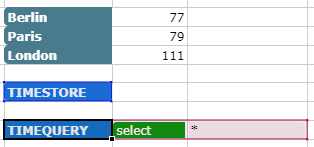

TIMEQUERY¶
Used to query values stored by TIMESTORE. The result can be saved to a specified TargetRange or used as an input for charts.
Syntax
TIMEQUERY(TimestoreCell, Query, [Interval, TargetRange, Limit])
Arguments
| Name | Description |
|---|---|
| TimstoreCell | A reference to the timestore cell on which the query should be executed. |
| Query | A JSON object which specifies the query to perform. See below for more information. |
| Interval | Optional. An interval in seconds at which the query should be executed. Only values with a timestampt within given interval are used as query input. If no interval is specified the query is performed on each step. |
| TargetRange | Optional. A cell range to write the query result to. |
| Limit | Optional. Specifies the maximum number of results stored. If limit is reached the function returns a #LIMIT error. Defaults to 1000. |
Query A query json consist of following clauses:
| Name | Description |
|---|---|
| select | Defines the values to query. Multiple values are separated by comma. The wildcard * will select all values. |
| aggregate | Optional. Defines the aggregation method to use for each value separted by comma. Must match the number of values in select clause. See below for a complete list of defined aggregation methods. Defaults to none. |
| where | Optional. Only values which fulfill the conditiondefined by the where clause are taken. To compare values >, >=, <, <=, = != are supported. Use AND and OR to combine conditions. |
Some Query Examples
| A | B | Description | |
| 1 | select | v1 | JSON(A1:B3) |
| 2 | aggregate | sum | will sum up all values of v1 |
| 3 | where | v2 > 50 AND v1 < 100 | for entries with a v2 value greater 50 and a v1 value less 100 |
| 4 | |||
| 5 | select | v1, v2 | JSON(A5:B6) |
| 6 | aggregate | sum, max | will sum up v1 and determine maximum of v2 |
| 7 | |||
| 8 | select | * | JSON(A8:B10) |
| 9 | aggregate | avg | will calculate the avarage of all values |
| 10 | where | v1 > 30 | for entries with a v1 value greater 30 |
Aggregation Methods
| Method | Description |
|---|---|
| none | No aggregation is performed and the last valid value of specified DataCell is returned. |
| avg | Calculates the average of all received values. |
| count | Counts the number of received number values. |
| counta | Counts all values which are not zero. |
| max | Determines the maximum of all received values. |
| min | Determines the minimum of all received values. |
| product | Calculates the product of all received values. |
| stdevs | Calculates the standard deviation of all recieved values. |
| stdevp | Currently not available!! |
| sum | Calculates the sum of all received values. |
Return Value
TRUE, if successful.
Example
| Function | Comment |
|---|---|
| =TIMEQUERY(C1, JSON(A1:B2)) | Queries the total values for v1 on each step |
| =TIMEQUERY(C1, JSON(A5:B6), 10) | Queries the total for v1 and the maximum of v2 every 10 seconds |
| =TIMEQUERY(C1, JSON(A8:B8),,D4:E14) | Simply writes all stored values to target range on each step |
 
TIMEQUERY(F19,JSON(G21:H21),,A16:D39,) A query to gather all information (G21:H21) from the TIMESTORE function (F19) and display them in a Target Range (A16:D39). Left image shows the query, right image shows the Target Range.